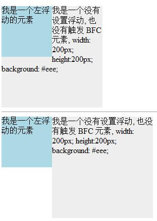
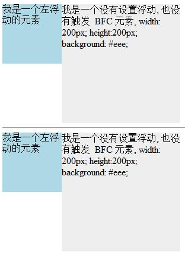
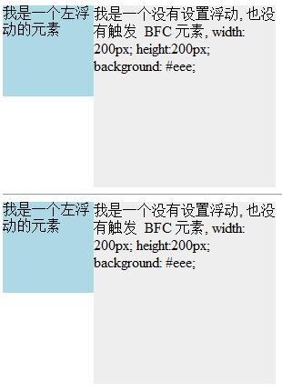
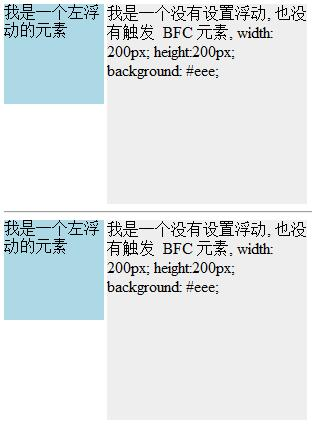
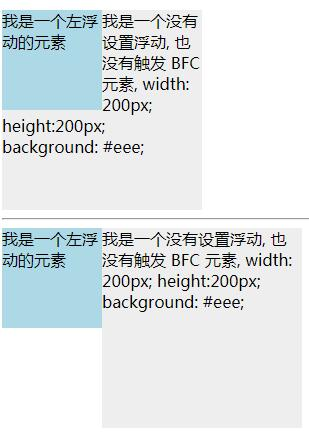
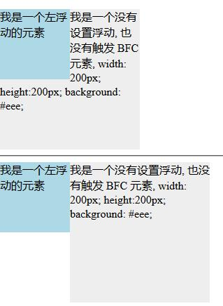

info
代码
<div style="height: 100px;width: 100px;float: left;background: lightblue">我是一个左浮动的元素</div> <div style="width: 200px; height: 200px;background: #eee;overflow: hidden;"> 我是一个没有设置浮动,也没有触发 BFC 元素, width: 200px; height:200px; background: #eee;</div>
我是一个左浮动的元素
我是一个没有设置浮动, 也没有触发 BFC 元素, width: 200px; height:200px; background: #eee;
bfc04-效果截图
IE8-浏览器模式：IE8标准模式，文档模式：IE8标准模式

IE8-浏览器模式：IE8兼容模式，文档模式：IE7

IE8-浏览器模式：IE7，文档模式：IE7

IE8-浏览器模式：IE8兼容模式，文档模式：QUIRKS

CHROME

FIREFOX
